Tch'est que ches pouor vos Mess Phlipp?
Mais ne Mary-Ann diantre. Tu sais bein que ch'est la meilleuthe.
Deux d'gouts de whiskey ou de gin?
Nennin, j'aime mus une Mary-Ann.
J'pense bein que t'es couomme mé et que ch'est une Mary-Ann?
Vèrr, viyant qu'il n'y a rein de milleur en Jèrri.
Tch'est que tu veurs prendre man vi?
Une Mary-Ann pouor seur, car il n'y a rein de dithèt.
Almonas des Chroniques de Jersey 1934
Tchi ch'est qu'une Mary-Ann?
Moussieu n'est pon Jèrriais, car y'saurait que ch'est la milleuthe biéthe.
Tch'est que tu veurs prendre man vi?
J'pense bein que t'es couomme mé et que ch'est une Mary-Ann?
Mary-Ann as-tu pensé à mé?
Èrgarde dans lé pagat et tu trouveras une Mary-Ann.
T'en vint-tu béthe une fais?
Véthe, et une Mary-Ann m'f'ra grand plaisi.
Quand nous est failli une Mary-Ann fait hardi d'bein pour vos ravigoter un miot.
Mary-Ann, la milleuthe biéthe en Jèrri.
Pouortchi qué tu prends tréjous une Mary-Ann?
Ch'est viyant qu'il n'y a pas dé milleuthe biéthe en Jèrri.
Si, j'allions prendre une Mary-Ann pour nous rafraîchi?
Pouor seux, n'v'la qui n'est pon dé r'fus.
Pourtchi une Mary-Ann, car il n'y a rein dithèt.
Vèrr, viyant qu'il n'y a rein dé milleur en Jèrri qu'une Mary-Ann.
Et tches qu'ou fîtes après?
J'allîmes prendre chacun une Mary-Ann.
Tch'est ch'est, deux gout dé whiskey ou dé gin?
Nennin mercis, j'aime mus une Mary-Ann.
Selon la buanne et ancienne coutume Mess Jean?
Véthe, tréjous une Mary-Ann.
T'en vint-tu baithe une fais?
Véthe, et une Mary-Ann m'f'ra grand pliaîsi.
Almonas des Chroniques de Jersey 1940
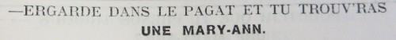
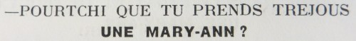
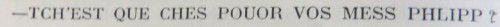
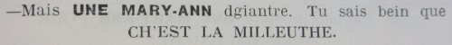
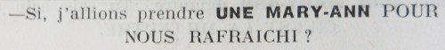
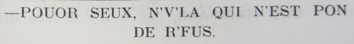
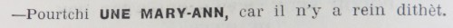
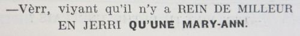
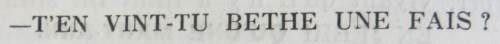
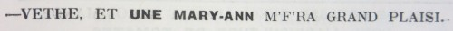
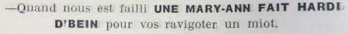

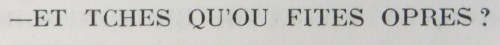
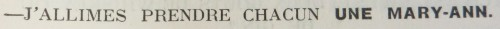
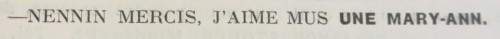
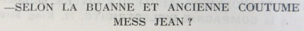
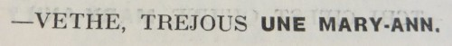
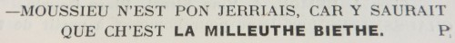
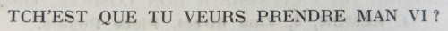
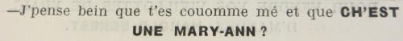
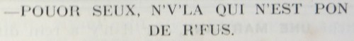
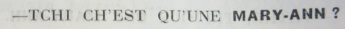
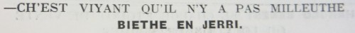
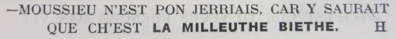
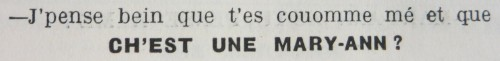
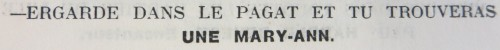
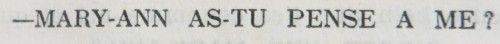
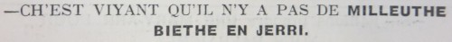
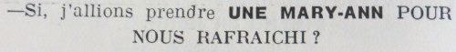
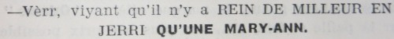
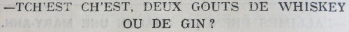
Viyiz étout: